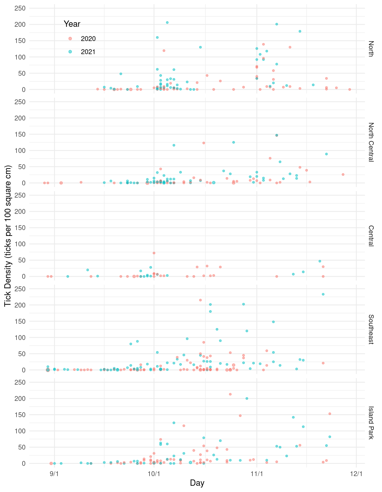
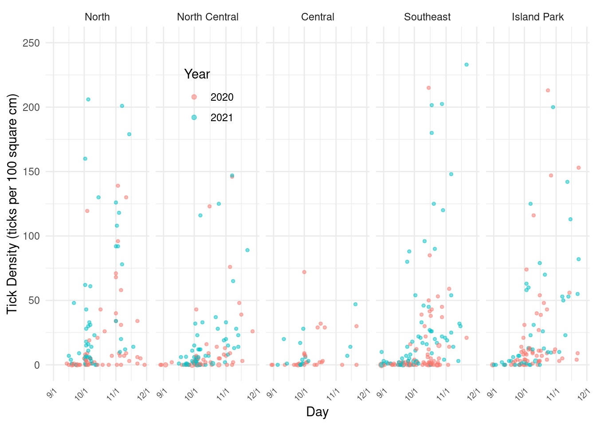
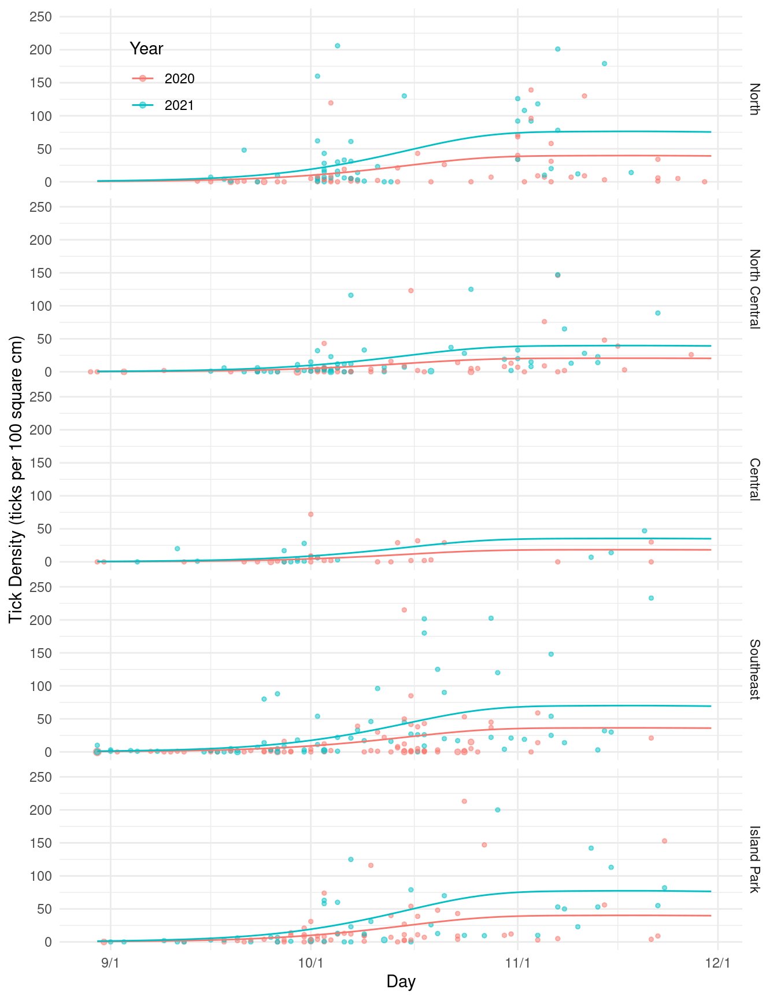
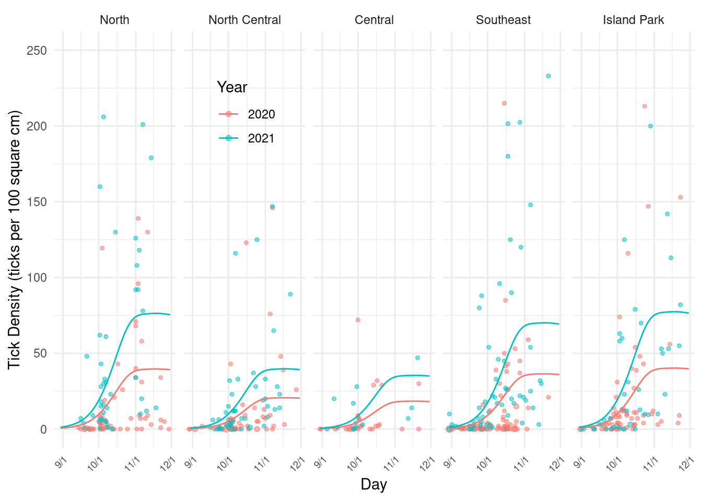

You can also download a PDF copy of this lecture.
The following packages are being used.
library(dplyr) # data manipulation
library(tidyr) # data manipulation
library(lubridate) # working with dates
library(forcats) # working with factors
library(whereami) # find current directory
library(ggplot2) # graphics
library(mgcv) # GAMs
library(trtools) # inference tools
library(emmeans) # inference tools
options(digits = 4) # control number of digits displayedHere I can use dirname(thisfile()) to find the directory
containing this Rmarkdown file, so I do not have to specify the full
path to the data file. Note that thisfile() is from the
whereami package. I have the data stored in a
sub-directory (“tickdata”) of the directory containing this Rmarkdown
file.
ticks <- read.csv(paste(dirname(thisfile()),
"/tickdata/tick_data_Robenstein.csv", sep = ""))
names(ticks) <- c("moose","mortality","ticks","size","date","gmu","sex","note")
head(ticks) moose mortality ticks size date gmu sex note
1 21005370 H 0 100 9/16/2020 1 MALE 1
2 21005396 H 21 100 10/14/2020 1 MALE 1
3 21005452 H 0 100 10/5/2020 1 MALE 1
4 21005506 H 9 100 11/11/2020 1 MALE 1
5 21005526 H 34 100 11/22/2020 1 MALE 1
6 21005538 H 1 100 11/5/2020 1 MALE 0Here I am going to process the data to get it ready for plotting and modeling.
ticks <- ticks %>%
mutate(note = factor(note, levels = 0:3,
labels = c("exclude", "include", "deterioration", "nodate"))) %>%
mutate(date = mdy(date)) %>%
mutate(month = month(date, label = TRUE), year = year(date), day = yday(date)) %>%
filter(!is.na(date), month %in% c("Aug","Sep","Oct","Nov")) %>%
mutate(year = factor(year)) %>% mutate(sex = tolower(sex)) %>%
mutate(day = ifelse(year == "2020", day - 1, day))
head(ticks) moose mortality ticks size date gmu sex note month year day
1 21005370 H 0 100 2020-09-16 1 male include Sep 2020 259
2 21005396 H 21 100 2020-10-14 1 male include Oct 2020 287
3 21005452 H 0 100 2020-10-05 1 male include Oct 2020 278
4 21005506 H 9 100 2020-11-11 1 male include Nov 2020 315
5 21005526 H 34 100 2020-11-22 1 male include Nov 2020 326
6 21005538 H 1 100 2020-11-05 1 male exclude Nov 2020 309Here I am going to use rename to rename the imported
variables.
gmu <- read.csv(paste(dirname(thisfile()), "/tickdata/tick_study_areas.csv", sep = "")) %>%
rename(gmu = GMU, area = study.Area, samples = hh_samples)
head(gmu, 10) gmu area samples
1 1 North 27
2 2 North 36
3 3 North 19
4 4 North 24
5 4A North 6
6 5 North Central 18
7 6 North Central 22
8 7 North Central 7
9 8 North Central 9
10 8A North Central 8ticks <- left_join(ticks, gmu) %>%
mutate(area = factor(area)) %>%
mutate(area = fct_relevel(area, c("North", "North Central",
"Central", "Southeast", "Island Park")))
head(ticks) moose mortality ticks size date gmu sex note month year day area samples
1 21005370 H 0 100 2020-09-16 1 male include Sep 2020 259 North 27
2 21005396 H 21 100 2020-10-14 1 male include Oct 2020 287 North 27
3 21005452 H 0 100 2020-10-05 1 male include Oct 2020 278 North 27
4 21005506 H 9 100 2020-11-11 1 male include Nov 2020 315 North 27
5 21005526 H 34 100 2020-11-22 1 male include Nov 2020 326 North 27
6 21005538 H 1 100 2020-11-05 1 male exclude Nov 2020 309 North 27Some variables we do not need. Also we are going to discard some questionable observations.
ticks <- ticks %>% select(-mortality, -samples, -gmu) %>%
filter(note == "include")
head(ticks) moose ticks size date sex note month year day area
1 21005370 0 100 2020-09-16 male include Sep 2020 259 North
2 21005396 21 100 2020-10-14 male include Oct 2020 287 North
3 21005452 0 100 2020-10-05 male include Oct 2020 278 North
4 21005506 9 100 2020-11-11 male include Nov 2020 315 North
5 21005526 34 100 2020-11-22 male include Nov 2020 326 North
6 21005546 1 100 2020-11-22 male include Nov 2020 326 Northd09 <- yday(mdy("09/1/2021"))
d10 <- yday(mdy("10/1/2021"))
d11 <- yday(mdy("11/1/2021"))
d12 <- yday(mdy("12/1/2021"))
pv <- ggplot(ticks, aes(x = day, y = ticks/size*100, color = year)) +
geom_count(alpha = 0.5) + scale_size_area(max_size = 2) +
theme_minimal() + facet_grid(area ~ .) +
labs(x = "Day", y = "Tick Density (ticks per 100 square cm)", color = "Year") +
guides(size = "none") +
scale_x_continuous(breaks = c(d09, d10, d11, d12),
labels = c("9/1", "10/1", "11/1", "12/1")) + ylim(c(0,250)) +
theme(legend.position = c(0.15, 0.925))
plot(pv)
ph <- ggplot(ticks, aes(x = day, y = ticks/size*100, color = year)) +
geom_count(alpha = 0.5) + scale_size_area(max_size = 2) + theme_minimal() +
facet_wrap(~ area, ncol = 5) +
labs(x = "Day", y = "Tick Density (ticks per 100 square cm)", color = "Year") +
guides(size = "none") +
scale_x_continuous(breaks = c(d09, d10, d11, d12),
labels = c("9/1", "10/1", "11/1", "12/1")) + ylim(c(0,250)) +
theme(legend.position = c(0.3, 0.8),
axis.text.x = element_text(angle = 45, size = 7, hjust = 1))
plot(ph)
I used a generalized additive model with a log link function estimated using (penalized) quasi-likelihood to deal with considerable over-dispersion.
m <- gam(ticks ~ offset(log(size)) + s(day) + year + area,
family = quasipoisson(link = log), data = ticks)
summary(m)
Family: quasipoisson
Link function: log
Formula:
ticks ~ offset(log(size)) + s(day) + year + area
Parametric coefficients:
Estimate Std. Error t value Pr(>|t|)
(Intercept) -2.0218 0.1855 -10.90 < 2e-16 ***
year2021 0.6547 0.1488 4.40 1.3e-05 ***
areaNorth Central -0.6532 0.2330 -2.80 0.0053 **
areaCentral -0.7678 0.4119 -1.86 0.0629 .
areaSoutheast -0.0852 0.1937 -0.44 0.6603
areaIsland Park 0.0143 0.2002 0.07 0.9431
---
Signif. codes: 0 '***' 0.001 '**' 0.01 '*' 0.05 '.' 0.1 ' ' 1
Approximate significance of smooth terms:
edf Ref.df F p-value
s(day) 2.94 3.71 19.6 <2e-16 ***
---
Signif. codes: 0 '***' 0.001 '**' 0.01 '*' 0.05 '.' 0.1 ' ' 1
R-sq.(adj) = 0.189 Deviance explained = 32.4%
GCV = 34.323 Scale est. = 55.985 n = 497Here we can visualize this model.
d <- expand.grid(year = c("2020","2021"), day = 242:334,
area = unique(ticks$area), size = 100)
d$yhat <- predict(m, newdata = d, type = "response")
pv <- pv + geom_line(aes(y = yhat), data = d)
plot(pv)
ph <- ph + geom_line(aes(y = yhat), data = d)
plot(ph)
How much higher is the expected tick density in 2021 than in 2020?
emmeans(m, ~year | area, at = list(day = d10),
type = "response", offset = log(100), data = ticks)area = North:
year rate SE df lower.CL upper.CL
2020 9.88 2.05 488 6.57 14.86
2021 19.02 3.69 488 12.99 27.85
area = North Central:
year rate SE df lower.CL upper.CL
2020 5.14 1.28 488 3.15 8.38
2021 9.90 2.27 488 6.31 15.52
area = Central:
year rate SE df lower.CL upper.CL
2020 4.59 1.87 488 2.06 10.21
2021 8.82 3.59 488 3.97 19.63
area = Southeast:
year rate SE df lower.CL upper.CL
2020 9.07 1.92 488 5.99 13.74
2021 17.47 3.36 488 11.97 25.49
area = Island Park:
year rate SE df lower.CL upper.CL
2020 10.02 2.13 488 6.60 15.22
2021 19.29 3.81 488 13.09 28.43
Confidence level used: 0.95
Intervals are back-transformed from the log scale pairs(emmeans(m, ~year | area, at = list(day = d10),
type = "response", offset = log(100), data = ticks), reverse = TRUE, infer = TRUE)area = North:
contrast ratio SE df lower.CL upper.CL null t.ratio p.value
year2021 / year2020 1.92 0.286 488 1.44 2.58 1 4.401 <.0001
area = North Central:
contrast ratio SE df lower.CL upper.CL null t.ratio p.value
year2021 / year2020 1.92 0.286 488 1.44 2.58 1 4.401 <.0001
area = Central:
contrast ratio SE df lower.CL upper.CL null t.ratio p.value
year2021 / year2020 1.92 0.286 488 1.44 2.58 1 4.401 <.0001
area = Southeast:
contrast ratio SE df lower.CL upper.CL null t.ratio p.value
year2021 / year2020 1.92 0.286 488 1.44 2.58 1 4.401 <.0001
area = Island Park:
contrast ratio SE df lower.CL upper.CL null t.ratio p.value
year2021 / year2020 1.92 0.286 488 1.44 2.58 1 4.401 <.0001
Confidence level used: 0.95
Intervals are back-transformed from the log scale
Tests are performed on the log scale Note: Here emmeans needs a bit more
information that is not contained in the model object, so we pass it the
data with data = ticks. The contrast function
will also work here, but it needs to be told the degrees of freedom by
including the argument df = m$df.residual.
How about the difference in the expected density for each area and the first of October? This is a discrete marginal effect, and both area and day matter.
trtools::margeff(m,
a = list(year = "2021", area = unique(ticks$area), day = d10, size = 100),
b = list(year = "2020", area = unique(ticks$area), day = d10, size = 100),
cnames = unique(ticks$area), df = m$df.residual) estimate se lower upper tvalue df pvalue
North 9.137 2.610 4.0093 14.265 3.501 488.1 0.0005058
North Central 4.755 1.442 1.9210 7.589 3.297 488.1 0.0010493
Central 4.240 1.964 0.3801 8.100 2.158 488.1 0.0313905
Southeast 8.391 2.352 3.7705 13.012 3.568 488.1 0.0003950
Island Park 9.269 2.655 4.0512 14.486 3.490 488.1 0.0005259Interestingly this can also be done using the
emmeans package through use of the regrid
function.
tmp <- emmeans(m, ~year | area, at = list(day = d10),
type = "response", offset = log(100), data = ticks)
pairs(regrid(tmp, type = "response"), reverse = TRUE, infer = TRUE)area = North:
contrast estimate SE df lower.CL upper.CL t.ratio p.value
year2021 - year2020 9.14 2.61 488 4.01 14.27 3.501 0.0005
area = North Central:
contrast estimate SE df lower.CL upper.CL t.ratio p.value
year2021 - year2020 4.75 1.44 488 1.92 7.59 3.297 0.0010
area = Central:
contrast estimate SE df lower.CL upper.CL t.ratio p.value
year2021 - year2020 4.24 1.96 488 0.38 8.10 2.158 0.0314
area = Southeast:
contrast estimate SE df lower.CL upper.CL t.ratio p.value
year2021 - year2020 8.39 2.35 488 3.77 13.01 3.568 0.0004
area = Island Park:
contrast estimate SE df lower.CL upper.CL t.ratio p.value
year2021 - year2020 9.27 2.66 488 4.05 14.49 3.490 0.0005
Confidence level used: 0.95 How about inferences for the average difference across areas?
emmeans(regrid(pairs(regrid(tmp, type = "response"), reverse = TRUE)), ~1) 1 estimate SE df lower.CL upper.CL
overall 7.16 1.86 488 3.51 10.8
Results are averaged over the levels of: area
Confidence level used: 0.95 Tricky!
How much does the expected tick density increase between, say, the first day of October and November?
emmeans(m, ~ day | year * area, at = list(day = c(d11,d10)),
data = ticks, type = "response")year = 2020, area = North:
day rate SE df lower.CL upper.CL
305 36.34 6.56 488 25.49 51.82
274 9.33 1.94 488 6.20 14.04
year = 2021, area = North:
day rate SE df lower.CL upper.CL
305 69.95 11.98 488 49.95 97.95
274 17.96 3.49 488 12.26 26.30
year = 2020, area = North Central:
day rate SE df lower.CL upper.CL
305 18.91 4.30 488 12.10 29.56
274 4.86 1.21 488 2.98 7.92
year = 2021, area = North Central:
day rate SE df lower.CL upper.CL
305 36.40 7.67 488 24.06 55.07
274 9.34 2.14 488 5.96 14.65
year = 2020, area = Central:
day rate SE df lower.CL upper.CL
305 16.86 6.94 488 7.51 37.87
274 4.33 1.76 488 1.94 9.65
year = 2021, area = Central:
day rate SE df lower.CL upper.CL
305 32.46 13.43 488 14.40 73.16
274 8.33 3.39 488 3.75 18.53
year = 2020, area = Southeast:
day rate SE df lower.CL upper.CL
305 33.38 6.06 488 23.36 47.70
274 8.57 1.81 488 5.66 12.98
year = 2021, area = Southeast:
day rate SE df lower.CL upper.CL
305 64.24 10.67 488 46.35 89.03
274 16.49 3.17 488 11.30 24.07
year = 2020, area = Island Park:
day rate SE df lower.CL upper.CL
305 36.87 7.21 488 25.11 54.13
274 9.47 2.01 488 6.23 14.37
year = 2021, area = Island Park:
day rate SE df lower.CL upper.CL
305 70.95 13.13 488 49.33 102.06
274 18.22 3.60 488 12.36 26.85
Confidence level used: 0.95
Intervals are back-transformed from the log scale pairs(emmeans(m, ~ day | year * area, at = list(day = c(d11,d10)),
data = ticks, type = "response"), infer = TRUE)year = 2020, area = North:
contrast ratio SE df lower.CL upper.CL null t.ratio p.value
day305 / day274 3.9 0.735 488 2.69 5.64 1 7.211 <.0001
year = 2021, area = North:
contrast ratio SE df lower.CL upper.CL null t.ratio p.value
day305 / day274 3.9 0.735 488 2.69 5.64 1 7.211 <.0001
year = 2020, area = North Central:
contrast ratio SE df lower.CL upper.CL null t.ratio p.value
day305 / day274 3.9 0.735 488 2.69 5.64 1 7.211 <.0001
year = 2021, area = North Central:
contrast ratio SE df lower.CL upper.CL null t.ratio p.value
day305 / day274 3.9 0.735 488 2.69 5.64 1 7.211 <.0001
year = 2020, area = Central:
contrast ratio SE df lower.CL upper.CL null t.ratio p.value
day305 / day274 3.9 0.735 488 2.69 5.64 1 7.211 <.0001
year = 2021, area = Central:
contrast ratio SE df lower.CL upper.CL null t.ratio p.value
day305 / day274 3.9 0.735 488 2.69 5.64 1 7.211 <.0001
year = 2020, area = Southeast:
contrast ratio SE df lower.CL upper.CL null t.ratio p.value
day305 / day274 3.9 0.735 488 2.69 5.64 1 7.211 <.0001
year = 2021, area = Southeast:
contrast ratio SE df lower.CL upper.CL null t.ratio p.value
day305 / day274 3.9 0.735 488 2.69 5.64 1 7.211 <.0001
year = 2020, area = Island Park:
contrast ratio SE df lower.CL upper.CL null t.ratio p.value
day305 / day274 3.9 0.735 488 2.69 5.64 1 7.211 <.0001
year = 2021, area = Island Park:
contrast ratio SE df lower.CL upper.CL null t.ratio p.value
day305 / day274 3.9 0.735 488 2.69 5.64 1 7.211 <.0001
Confidence level used: 0.95
Intervals are back-transformed from the log scale
Tests are performed on the log scale What about the difference in the expected densities (i.e., marginal effects)?
tmp <- emmeans(m, ~ day | year * area, at = list(day = c(d11,d10)),
data = ticks, type = "response")
pairs(regrid(tmp, type = "response"), infer = TRUE)year = 2020, area = North:
contrast estimate SE df lower.CL upper.CL t.ratio p.value
day305 - day274 27.0 5.76 488 15.69 38.3 4.689 <.0001
year = 2021, area = North:
contrast estimate SE df lower.CL upper.CL t.ratio p.value
day305 - day274 52.0 10.78 488 30.80 73.2 4.822 <.0001
year = 2020, area = North Central:
contrast estimate SE df lower.CL upper.CL t.ratio p.value
day305 - day274 14.1 3.57 488 7.04 21.1 3.934 0.0001
year = 2021, area = North Central:
contrast estimate SE df lower.CL upper.CL t.ratio p.value
day305 - day274 27.1 6.53 488 14.23 39.9 4.146 <.0001
year = 2020, area = Central:
contrast estimate SE df lower.CL upper.CL t.ratio p.value
day305 - day274 12.5 5.42 488 1.88 23.2 2.311 0.0212
year = 2021, area = Central:
contrast estimate SE df lower.CL upper.CL t.ratio p.value
day305 - day274 24.1 10.50 488 3.49 44.8 2.297 0.0221
year = 2020, area = Southeast:
contrast estimate SE df lower.CL upper.CL t.ratio p.value
day305 - day274 24.8 5.29 488 14.41 35.2 4.687 <.0001
year = 2021, area = Southeast:
contrast estimate SE df lower.CL upper.CL t.ratio p.value
day305 - day274 47.7 9.65 488 28.78 66.7 4.946 <.0001
year = 2020, area = Island Park:
contrast estimate SE df lower.CL upper.CL t.ratio p.value
day305 - day274 27.4 6.27 488 15.09 39.7 4.372 <.0001
year = 2021, area = Island Park:
contrast estimate SE df lower.CL upper.CL t.ratio p.value
day305 - day274 52.7 11.69 488 29.77 75.7 4.511 <.0001
Confidence level used: 0.95 Here is the average marginal effect for each year (i.e., averaging across areas).
emmeans(regrid(pairs(regrid(tmp, type = "response"))), ~year) year estimate SE df lower.CL upper.CL
2020 21.2 4.00 488 13.3 29.0
2021 40.7 7.36 488 26.3 55.2
Results are averaged over the levels of: area
Confidence level used: 0.95 How fast was the expected tick density increasing on the first day of October? This is an instantaneous marginal effect.
trtools::margeff(m, delta = 0.001, df = m$df.residual,
a = list(day = d10 + 0.001, area = unique(ticks$area), year = "2020", size = 100),
b = list(day = d10, area = unique(ticks$area), year = "2020", size = 100),
cnames = unique(ticks$area)) estimate se lower upper tvalue df pvalue
North 0.7546 0.1900 0.38121 1.1280 3.971 488.1 8.238e-05
North Central 0.3927 0.1123 0.17203 0.6133 3.497 488.1 5.140e-04
Central 0.3501 0.1549 0.04583 0.6545 2.261 488.1 2.422e-02
Southeast 0.6930 0.1735 0.35209 1.0339 3.994 488.1 7.490e-05
Island Park 0.7655 0.1942 0.38391 1.1470 3.942 488.1 9.267e-05We can approximate this fairly well with the change in the expected tick density between the first and second days of October.
tmp <- emmeans(m, ~ day | year * area, at = list(day = c(d10 + 1, d10), year = "2020"),
data = ticks, type = "response")
pairs(regrid(tmp, type = "response"), infer = TRUE)year = 2020, area = North:
contrast estimate SE df lower.CL upper.CL t.ratio p.value
day275 - day274 0.732 0.185 488 0.3682 1.096 3.953 0.0001
year = 2020, area = North Central:
contrast estimate SE df lower.CL upper.CL t.ratio p.value
day275 - day274 0.381 0.109 488 0.1663 0.596 3.487 0.0005
year = 2020, area = Central:
contrast estimate SE df lower.CL upper.CL t.ratio p.value
day275 - day274 0.340 0.151 488 0.0437 0.636 2.255 0.0246
year = 2020, area = Southeast:
contrast estimate SE df lower.CL upper.CL t.ratio p.value
day275 - day274 0.672 0.168 488 0.3416 1.003 3.995 0.0001
year = 2020, area = Island Park:
contrast estimate SE df lower.CL upper.CL t.ratio p.value
day275 - day274 0.743 0.189 488 0.3714 1.114 3.931 0.0001
Confidence level used: 0.95 Finally consider a comparison of areas.
pairs(emmeans(m, ~area | year, at = list(day = d10), type = "response",
data = ticks), adjust = "none")year = 2020:
contrast ratio SE df null t.ratio p.value
North / North Central 1.922 0.448 488 1 2.804 0.0053
North / Central 2.155 0.888 488 1 1.864 0.0629
North / Southeast 1.089 0.211 488 1 0.440 0.6603
North / Island Park 0.986 0.197 488 1 -0.071 0.9431
North Central / Central 1.121 0.485 488 1 0.265 0.7913
North Central / Southeast 0.567 0.131 488 1 -2.461 0.0142
North Central / Island Park 0.513 0.122 488 1 -2.801 0.0053
Central / Southeast 0.505 0.209 488 1 -1.653 0.0990
Central / Island Park 0.457 0.189 488 1 -1.890 0.0594
Southeast / Island Park 0.905 0.179 488 1 -0.503 0.6151
year = 2021:
contrast ratio SE df null t.ratio p.value
North / North Central 1.922 0.448 488 1 2.804 0.0053
North / Central 2.155 0.888 488 1 1.864 0.0629
North / Southeast 1.089 0.211 488 1 0.440 0.6603
North / Island Park 0.986 0.197 488 1 -0.071 0.9431
North Central / Central 1.121 0.485 488 1 0.265 0.7913
North Central / Southeast 0.567 0.131 488 1 -2.461 0.0142
North Central / Island Park 0.513 0.122 488 1 -2.801 0.0053
Central / Southeast 0.505 0.209 488 1 -1.653 0.0990
Central / Island Park 0.457 0.189 488 1 -1.890 0.0594
Southeast / Island Park 0.905 0.179 488 1 -0.503 0.6151
Tests are performed on the log scale Due to an absence of interactions involving area, neither year or day matter.
pairs(emmeans(m, ~area, type = "response", data = ticks), adjust = "none") contrast ratio SE df null t.ratio p.value
North / North Central 1.922 0.448 488 1 2.804 0.0053
North / Central 2.155 0.888 488 1 1.864 0.0629
North / Southeast 1.089 0.211 488 1 0.440 0.6603
North / Island Park 0.986 0.197 488 1 -0.071 0.9431
North Central / Central 1.121 0.485 488 1 0.265 0.7913
North Central / Southeast 0.567 0.131 488 1 -2.461 0.0142
North Central / Island Park 0.513 0.122 488 1 -2.801 0.0053
Central / Southeast 0.505 0.209 488 1 -1.653 0.0990
Central / Island Park 0.457 0.189 488 1 -1.890 0.0594
Southeast / Island Park 0.905 0.179 488 1 -0.503 0.6151
Results are averaged over the levels of: year
Tests are performed on the log scale How about differences in the expected density (here day and year matter)?
tmp <- emmeans(m, ~area | year, at = list(day = d10), type = "response", data = ticks)
pairs(regrid(tmp, type = "response"), infer = TRUE, adjust = "none")year = 2020:
contrast estimate SE df lower.CL upper.CL t.ratio p.value
North - North Central 4.475 1.71 488 1.12 7.831 2.620 0.0091
North - Central 5.001 2.30 488 0.49 9.512 2.178 0.0299
North - Southeast 0.762 1.74 488 -2.65 4.173 0.439 0.6610
North - Island Park -0.134 1.88 488 -3.83 3.565 -0.071 0.9431
North Central - Central 0.526 1.93 488 -3.26 4.316 0.273 0.7853
North Central - Southeast -3.713 1.59 488 -6.83 -0.594 -2.339 0.0198
North Central - Island Park -4.610 1.79 488 -8.12 -1.097 -2.578 0.0102
Central - Southeast -4.239 2.21 488 -8.59 0.110 -1.915 0.0560
Central - Island Park -5.135 2.35 488 -9.75 -0.519 -2.186 0.0293
Southeast - Island Park -0.896 1.79 488 -4.42 2.624 -0.500 0.6172
year = 2021:
contrast estimate SE df lower.CL upper.CL t.ratio p.value
North - North Central 8.613 3.27 488 2.18 15.046 2.631 0.0088
North - Central 9.625 4.32 488 1.15 18.105 2.230 0.0262
North - Southeast 1.466 3.35 488 -5.11 8.044 0.438 0.6616
North - Island Park -0.259 3.62 488 -7.38 6.860 -0.071 0.9431
North Central - Central 1.012 3.70 488 -6.26 8.283 0.274 0.7846
North Central - Southeast -7.147 3.01 488 -13.06 -1.230 -2.373 0.0180
North Central - Island Park -8.872 3.41 488 -15.57 -2.174 -2.602 0.0095
Central - Southeast -8.159 4.14 488 -16.30 -0.019 -1.969 0.0495
Central - Island Park -9.884 4.40 488 -18.53 -1.234 -2.245 0.0252
Southeast - Island Park -1.725 3.45 488 -8.51 5.057 -0.500 0.6175
Confidence level used: 0.95